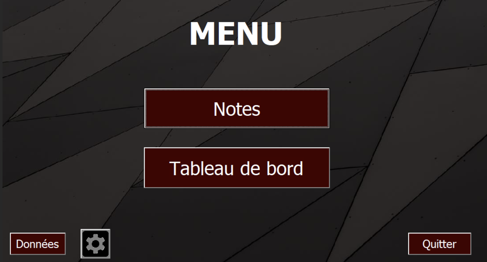
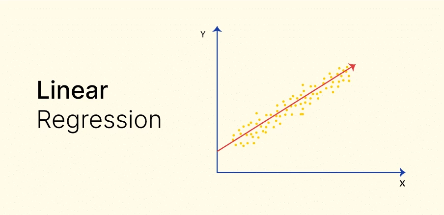
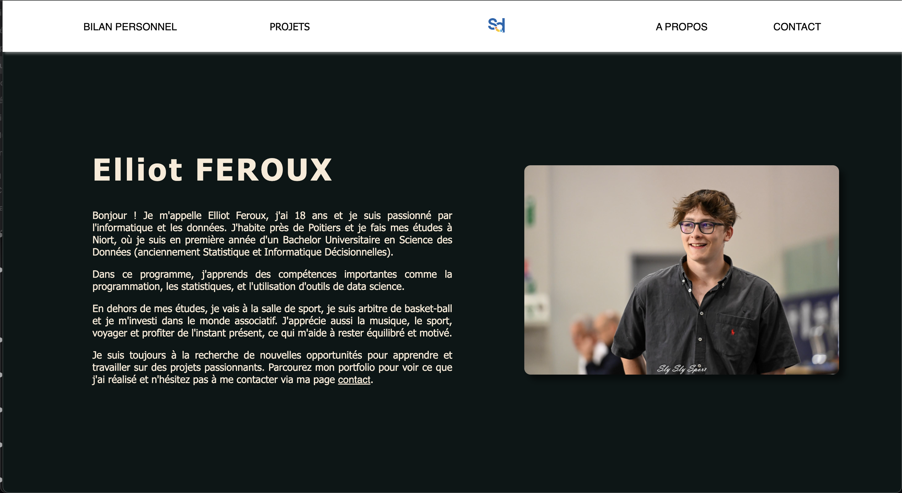
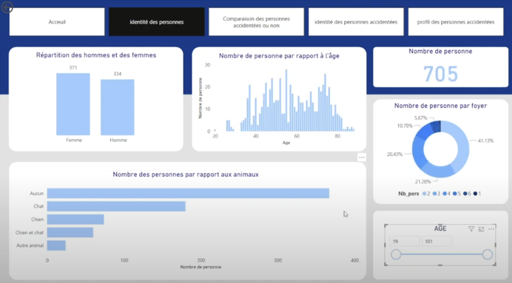
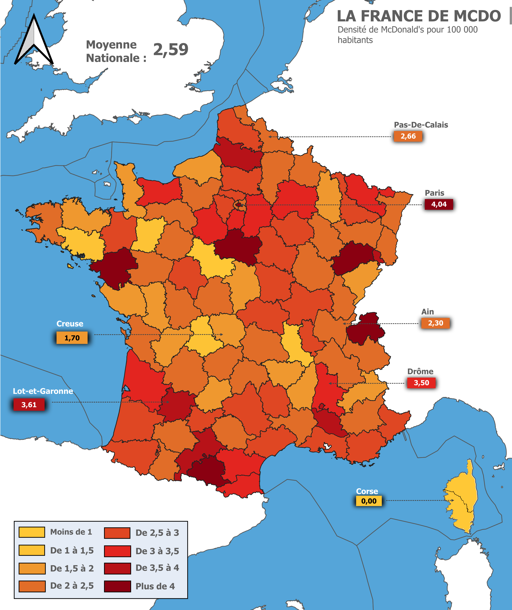
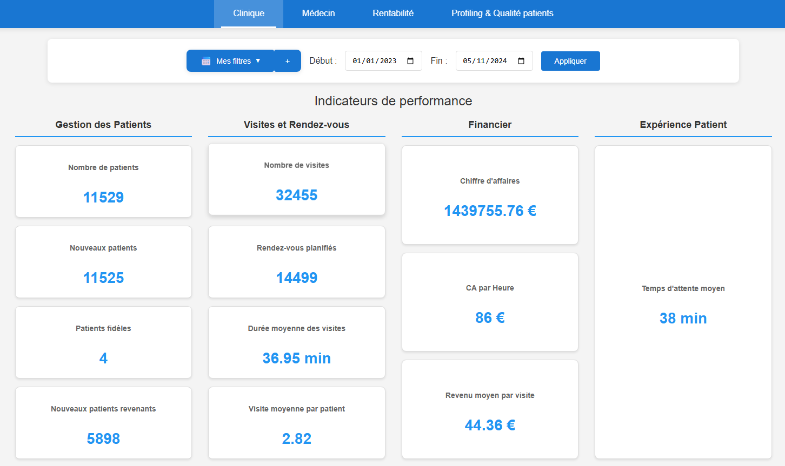
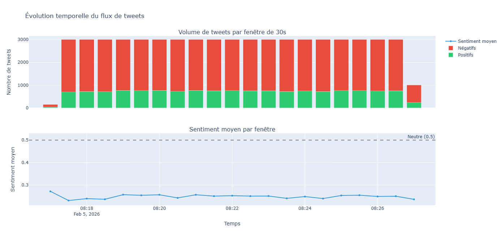

Dans le cadre de nos cours de Communication et d'Anglais, nous devions faire un exposé sur une destination touristique en anglais.

Dans le cadre de notre apprentissage du langage Python, nous avons dû traiter un fichier JSON en Python.
Dans le cadre de notre apprentissage du langage VBA, nous avions un projet sur une semaine où l'objectif était de créer un outil de gestion de notes.

Durant ce projet nous avons appris à appliquer un modèle linéaire afin de prédire des prix d'appartements à Paris.

L'objectif de ce projet était de prendre en main les outils tels que HTML, CSS et JS. Il fallait créer un portfolio numérique.

L'objectif de cette SAÉ est de créer un outil interactif permettant d'évaluer l'étendue et les caractéristiques des AcVC en France.

Étude complète de la situation économique et démographique de la Martinique à partir de données INSEE : déclin démographique, chômage, inégalités et indicateurs statistiques.

Analyse de la controverse autour de l'autoroute A69 (Toulouse–Castres) : enjeux économiques, environnementaux et sociaux, confrontation des acteurs et alternatives.

Analyse spatiale de l'implantation des restaurants McDonald's en France à l'aide de QGIS : jointures spatiales, zones tampon et cartes thématiques de densité par département.

Étude de prévision des importations du Danemark à partir de données OCDE, utilisant la décomposition de séries chronologiques et la méthode de Buys-Ballot.

Création d'un tableau de bord sous Excel pour analyser les performances économiques et financières du groupe L'Oréal à l'international.

Amélioration d'une application de gestion de cabinet dentaire avec de nouvelles fonctionnalités d'analyse, de suivi des performances et de qualité des données.

Conception d'un système de classification de tweets en temps réel, de la collecte Kafka jusqu'au tableau de bord de visualisation des sentiments prédits.

Ce projet fût relativement stressant. Un des premiers de l'année. Toute une phase de recherche sur la ville de New-York City puis une phase à l'oral en Anglais. J'ai pu comprendre l'importance de travailler en équipe afin de se répartir le travail. De plus, il m'a permis de m'améliorer au niveau de ma confiance à m'exprimer en public.
Dans ce projet notre but était de transformer un fichier JSON en fichier CSV avec des colonnes précises. Nous devions utiliser Python. Cela nous a appris à utiliser les librairies json et csv qui permettent respectivement de lire un fichier json et d'écrire un fichier csv. Le sujet était relativement compliqué à traiter notamment dû à la complexité des données médicales. Ce que j'ai le plus compris est "Comprendre les structures algorithmiques de base et leur contexte d'usage" — cette SAE m'a vraiment permis de m'améliorer au niveau de l'algorithmique.
Afin de réaliser ce projet nous étions en groupe de deux. L'objectif était de réussir à maîtriser les outils graphiques et algorithmiques de VBA. Nous avions le choix de réaliser ça en Excel ou VBA. Notre choix a été de faire la majorité en VBA afin de nous former le plus possible. Cette SAE est devenue un exemple pour moi au niveau organisation et gestion des divergences d'opinions, nous avons réussi à faire ce que nous voulions réaliser dans les délais.
Ce projet fut compliqué de mon côté, ayant certaines difficultés en mathématiques, j'ai eu des difficultés pour comprendre la stratégie à adopter. Je me perdais sous la masse de formules à notre disposition. De plus nous devions utiliser le langage "R" qui ne m'était que très peu familier. Malgré cela, ce travail m'a vraiment intéressé et j'ai compris l'importance des modèles de prédictions.
Ce projet s'est révélé assez exigeant lorsqu'il s'agissait de le réaliser manuellement. Certains préfèrent utiliser des modèles déjà existants, tandis que d'autres optent pour des sites qui font le travail à leur place. Pour ma part, j'ai pris la décision de tout créer moi-même. Cela m'a permis de vraiment saisir le fonctionnement du HTML et du CSS. J'ai même réussi à comprendre un peu comment fonctionne le JavaScript. Le défi le plus complexe a été de maîtriser toutes les techniques de mise en page proposées par le CSS pour positionner ces éléments. Mais finalement, j'ai réussi à développer quelques automatismes, et j'en suis fier.
Au début, avec Andrea, j'ai travaillé sur la représentativité des données (sexes et âges) et leurs graphiques, en utilisant la bibliothèque pandas malgré quelques difficultés avec les dataframes. Nous avons bien réparti les tâches.
Durant les deux derniers jours, en l'absence du SCRUM Master, j'ai organisé des réunions pour maintenir la coordination. Mon ressenti est que, malgré une bonne collaboration et aucun problème majeur, notre organisation était perfectible. Le sujet vague et les données perturbantes ont causé des retards. J'ai apprécié le projet globalement.
J'ai réalisé une étude complète de la situation économique et démographique de la Martinique à partir de données INSEE. Le travail couvrait plusieurs axes : l'analyse du déclin démographique (perte de près de 23 000 habitants entre 2014 et 2020), le vieillissement de la population et le calcul du ratio de dépendance économique par commune, l'étude du chômage (22 % en moyenne, 45 % chez les jeunes) et ses liens avec le niveau de diplôme, ainsi que les inégalités d'emploi entre hommes et femmes, notamment sur le temps partiel.
L'étude mobilisait des indicateurs de statistique descriptive (moyennes, médianes, écarts types, coefficients de variation, taux de croissance) et s'appuyait sur des visualisations variées (cartes, pyramides des âges, boîtes à moustaches, diagrammes en barres). L'exercice m'a appris à structurer une analyse complète sur des données réelles, avec l'idée de produire quelque chose d'exploitable pour des élus.
Dans le cadre d'un projet académique, j'ai analysé la controverse autour de l'autoroute A69 (Toulouse–Castres) en étudiant les enjeux économiques, environnementaux et sociaux, ainsi que les arguments des différents acteurs (institutions, entreprises, opposants).
Ce travail m'a permis de structurer une analyse critique d'un débat public réel, de comparer des sources variées et de prendre du recul sur les logiques de décision, notamment en identifiant les limites du projet et les alternatives possibles.
J'ai réalisé une étude de prévision des importations du Danemark à partir de données issues de l'OCDE. L'objectif était de décomposer la série chronologique pour en extraire la tendance et la saisonnalité, puis de produire des prévisions à court terme en utilisant la méthode de Buys-Ballot.
Le travail comprenait le traitement et la mise en forme des données, la modélisation statistique, ainsi que la rédaction d'un rapport structuré dans une logique d'aide à la décision économique. Réalisé en première année, ce projet m'a permis de découvrir concrètement l'analyse de séries temporelles et de développer un premier regard critique sur la qualité d'une prévision et ses limites.
Dans le cadre d'un projet en Systèmes d'Information Géographique, j'ai mené une analyse spatiale de l'implantation des restaurants McDonald's sur le territoire français à l'aide du logiciel QGIS. Le travail consistait à croiser plusieurs couches de données géographiques grâce à des jointures spatiales, à créer des zones tampon autour des points d'intérêt, et à produire des cartes thématiques représentant la densité de restaurants par département.
L'exercice m'a familiarisé avec la manipulation de données géolocalisées, la logique de superposition de couches et la restitution cartographique. C'est un des projets que j'ai le plus apprécié en BUT. Le fait de voir les données prendre forme sur une carte, de pouvoir les interroger visuellement, ça m'a donné envie de creuser davantage l'analyse spatiale et les outils SIG en général.
L'objectif de ce projet était de concevoir un tableau de bord analysant la situation économique et les performances mondiales du groupe L'Oréal. À partir d'un jeu de données financiers, j'ai développé un outil de reporting dynamique permettant de suivre l'évolution de l'entreprise dans le temps et à l'international.
Réalisé en autonomie sur une période de deux semaines, ce projet avait pour contrainte l'utilisation exclusive d'Excel. Malgré les limites de cet outil en matière de datavisualisation par rapport aux solutions BI modernes, le résultat final offre des indicateurs clairs et synthétiques. Le reporting permet d'explorer efficacement le chiffre d'affaires, l'évolution de la productivité et la rentabilité globale du groupe.
Dans le cadre de ce projet de BUT 3, nous avons repris et enrichi MyDental, une application dédiée à la gestion d'un cabinet dentaire. Notre objectif était de rendre l'outil plus complet et plus utile au quotidien, en ajoutant des indicateurs sur les performances des médecins, l'activité globale du cabinet et la qualité des données présentes dans la base existante.
Nous avons également retravaillé l'interface utilisateur afin de proposer une expérience plus claire et plus agréable. Ce projet m'a permis de consolider mon travail en équipe, de mieux structurer une démarche de gestion de projet et de mobiliser mes compétences en analyse de données sur une application concrète.
Compétences développées : HTML/CSS/JS, Docker, API, MariaDB.
Ce projet avait pour objectif de construire une chaîne complète de classification de sentiments appliquée à des tweets en temps réel. J'ai d'abord mis en place la collecte des données avec Kafka, puis préparé et analysé les tweets afin d'entraîner un modèle de classification adapté au traitement de texte.
La solution s'appuie ensuite sur un pipeline de production combinant Spark Structured Streaming et le modèle de machine learning pour prédire automatiquement le sentiment des nouveaux tweets collectés. La dernière étape consistait à concevoir un tableau de bord permettant de suivre les volumes, la répartition des sentiments, leur évolution dans le temps, ainsi que certains indicateurs comme les hashtags et comptes les plus fréquents.
Ce travail m'a permis de relier plusieurs compétences techniques dans un cas d'usage concret : ingestion de données en continu, préparation de texte, entraînement d'un modèle, industrialisation d'un pipeline et restitution visuelle des résultats.
Compétences développées : Python, PySpark, Kafka.
Annexe 00 — Setup
Annexe 01 — Streaming et indicateurs
Annexe 02 — Modèle de sentiment
Annexe 03 — Pipeline de production
Annexe 04 — Dashboard tweets
00 — Setup : vérification de l'environnement PySpark, HDFS, Kafka et Voila.
01 — Streaming : connexion au flux, parsing CSV, indicateurs par fenêtre, hashtags, mentions et alertes.
02 — Machine learning : nettoyage du texte, pipeline TF-IDF et régression logistique avec PySpark MLlib.
03 — Production : intégration Kafka, Spark Structured Streaming et application du modèle aux tweets entrants.
04 — Dashboard : visualisations de la répartition des sentiments, de l'évolution temporelle, des hashtags et des mentions.